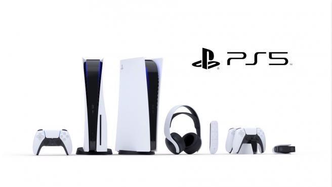

Historia
PlayStation 1

es la primera videoconsola de Sony, y la primera de dicha compañía en ser diseñada por Ken Kutaragi, y es una videoconsola de sobremesa de 32 bits lanzada por Sony Computer Entertainment el 3 de diciembre de 1994 en Japón. Se considera la videoconsola más exitosa de la quinta generación tanto en ventas como en popularidad.
PlayStation 2

es la segunda videoconsola de sobremesa producida por Sony Computer Entertainment, y la tercera consola de Sony en ser diseñada por Ken Kutaragi. Además de ser la sucesora de la PlayStation. Fue lanzada por primera vez el 4 de marzo del año 2000 en Japón, y unos meses después en el resto del mundo. Es la videoconsola más vendida de la historia, con más de 155 millones de unidades vendidas. Esta consola es también la que más títulos posee, aproximadamente 3870 títulos, seguida por su predecesora la PlayStation con unos 2500 títulos. Esta cantidad de títulos se debe a la extraordinaria acogida por parte del público en general hacia la misma, lo que incluso la consolidó como la consola con más tiempo en el mercado y a su vez la consola con más duración en el mismo, hasta que el 3 de enero del año 2013 se decide detener su fabricación tras 13 años de actividad.
PlayStation 3

es la tercera videoconsola del modelo PlayStation de Sony Computer Entertainment. Es la quinta y última consola de Sony en ser diseñada por Ken Kutaragi y forma parte de las videoconsolas de séptima generación.La PlayStation 3 fue lanzada al mercado el 11 de noviembre de 2006 en Japón, el 17 de noviembre de 2006 en Norteamérica y el 23 de marzo de 2007 en Europa y Australia. Dos variantes estaban disponibles en el momento del lanzamiento: un modelo básico con 20 GB de disco duro SATA 2,5" y un modelo profesional con disco duro de 60 GB y varias características adicionales como doble número de puertos USB y retrocompatibilidad con juegos de su antecesora PlayStation 2 y Playstation 1.
PlayStation 4

es la cuarta videoconsola del modelo PlayStation. Es la segunda consola de Sony en ser diseñada por Mark Cerny y forma parte de las videoconsolas de octava generación. Fue anunciada oficialmente el 20 de febrero de 2013 en el evento PlayStation Meeting 2013, aunque el diseño de la consola no fue presentado hasta el 10 de junio en el E3 2013. Entre las nuevas aplicaciones y servicios, Sony lanzó la aplicación PlayStation App, permitiendo a los que tengan una PS4 convertir los teléfonos inteligentes y las tabletas en una segunda pantalla para mejorar la jugabilidad o en teclados externos para más comodidad en el momento de escribir.
PlayStation 5
Es una consola de videojuegos de sobremesa desarrollada por la empresa Sony Interactive Entertainment. Fue anunciada en el año 2019 como la sucesora de la PlayStation 4, la PS5 se lanzó el 12 de noviembre de 2020 en Australia, Japón, Nueva Zelanda, América del Norte, Singapur y Corea del Sur, y en el resto de países el 19 de noviembre de 2020. La plataforma se lanzó en dos variantes: un modelo base con una unidad de disco óptico compatible con Ultra HD Blu-ray y una edición digital que carece de esta unidad, que sirve como modelo de menor costo para quienes prefieren comprar videojuegos mediante descarga digital.